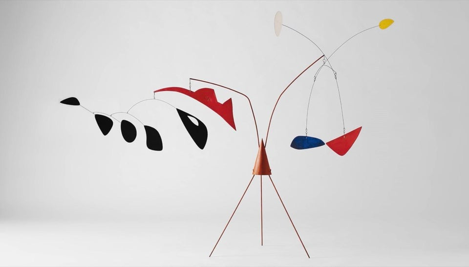
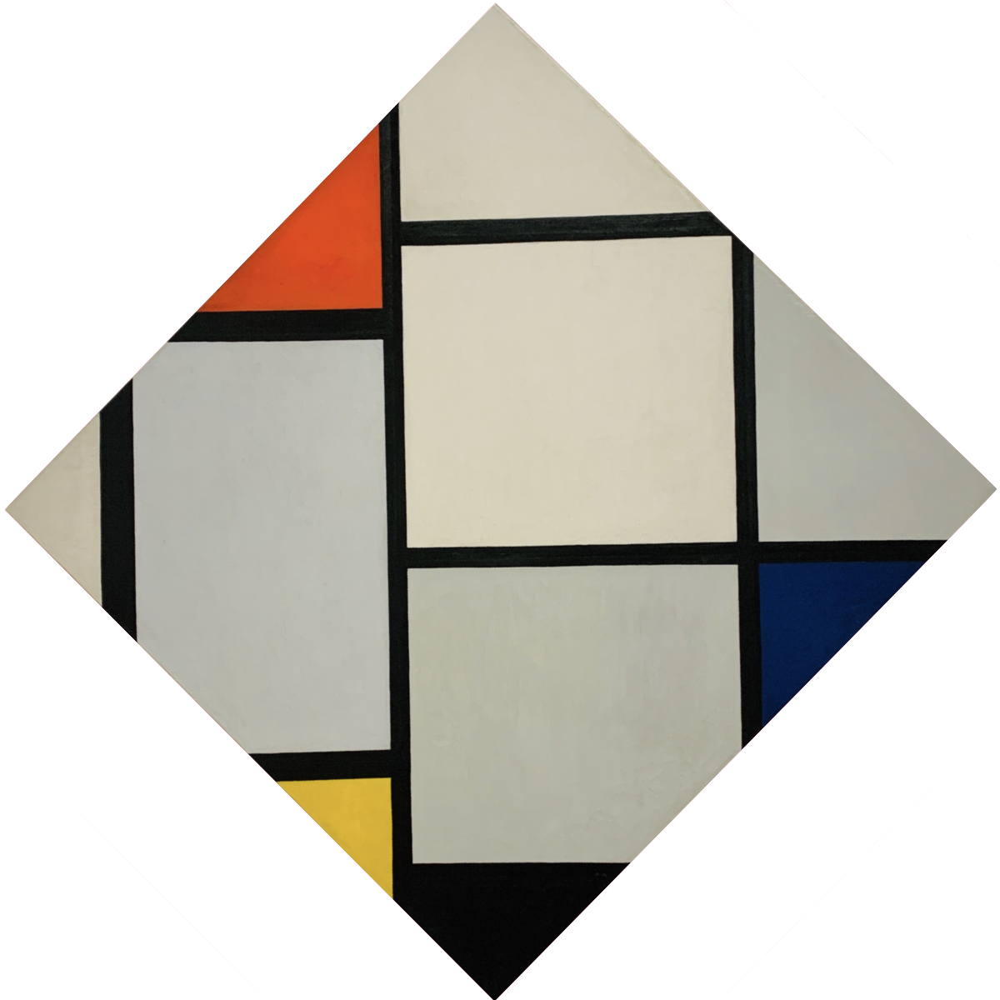

01/23/2022
 Alexander Calder - Untitled (1941)
Art affects the way we perceive a physical space, in how it harmonizes with our headspace. At first glance, excessive detail helps to bring form and structure to a composition that might otherwise lack character. But details aren’t a necessary ingredient for complexion. Oftentimes, your intuition is the best catalyst for appreciating art, and the personal meaning you derive from it may come after the fact.
Pieces originating from art movements such as realism are not hard to appreciate, because their sheer abundance of detailing evokes appreciation without requiring much in the way of interpretation. Such pieces are instantly gratifying to admire, because of their earthly appearance and presentation.
But these first impressions may come at a cost. As time passes, your degree of fascination is likely to wane. Related styles leave little to interpret for yourself, to “personalize” as you conceptualize them; the context is immediately apparent. If the scene depicted doesn’t strongly resonate with a relatable experience, a sight you’ve seen or a place you wish you could visit, then how can it sustain personal meaning for you over time? This dilemma is not unique to nature scenes, but instead to any piece leaving less to the imagination.
The diminishing returns in complexity at first sight are ironic. Conversely, your first impression of a style making use of minimalism might be underwhelming. But a patient interpretation of an abstract piece has near guaranteed uniqueness and lasting appeal. “Patient” in this case means letting your intuition take over, instead of your brute-forced rationale. The first idea in your head at each consecutive glance can form a myriad of surreal and abstract scenes, familiar or otherwise. And this ultimately increases accessibility to a given piece, as you connect with it and personalize your interpretation.
 Lee Ufan - Dialogue (2018)
Lee Ufan - Dialogue (2018)
This accessibility- appreciating a minimalistic form, without need to distinguish exactly which details draw you in- is almost zen-like. Apart from conventional art, it’s especially challenging to minimize complexity and clutter when designing physical tools and digital interfaces. This intention for user accessibility lies at the heart of Dieter Rams’ “Less, But Better” philosophy. Intentional, undistracting, focused design is rewarded in how it blurs the boundaries of what art can be, spilling into ecosystems of intuitive physical tools, electronics, and even music.
Some of the most famous pieces borrowing from minimalism, e.g. from the De Stijl and Bauhaus movements, make use of primary color accents. These colors’ ability to create a spectrum of hues are befitting to the subtler appeal of these pieces at first glance, while offering a mental palette for personalization. When considering an artist’s intentions, one can also appreciate how the simplest forms are rooted in much more complex scenes. Many such pieces are true abstractions, after all.
 Piet Mondrian - Tableau No. IV; Lozenge Composition (1924/1925)